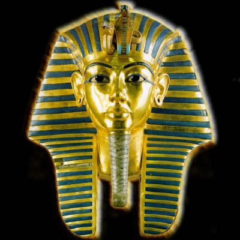
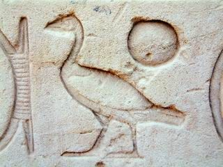

A Name Laden with Meaning.
‘Pharaoh’, a word which awakens a distant past, buried beneath the sands of time. A name born around the time of the pyramids when the pharaonic administration first took shape. It is necessary to think a little scientifically in order to understand why this common name came to be regarded as such a status.
The Greeks pronounced it in the same manner as the northern Egyptians, ‘pharao’, a name which officially indicated the heads of office of the King of the two worlds; in other words - the earthly inheritors of Horus. Pharaoh (‘Phar-ao’) is actually the Egyptian pronunciation – ‘P (h) er-aa’ or ‘Perao’ which stood for “The Grand House”, meaning the royal palace. This royal palace included all royal officials of the Ancient Empire. But equally in Greek, you have ‘Pharaon’, a corruption of Pharaoh whose meaning is in no doubt. The first century Jewish writer Flavius Joseph reminds us that at this period in question; - ‘Pharaoh, according to the Egyptians means King’.
Through time and the evolution of language, the seat of the royal institute (the palace offices) ended up being confused with the institution itself. Imagine us referring to ‘The White house’ when meaning ‘The President’, ‘The Quay d’Orsay’ when meaning ‘French diplomats’, ‘The Vatican’ when meaning ‘The Papacy’. As is also the case with ‘The Sublime Gateway’, which was once used as the equivalent of ‘The Ottoman Empire’. ‘The Royal Palace’ thus became a term meaning ‘The ruling King’ whose insignia was always followed by the three mottos ‘Life, Prosperity and Health’.
Moreover, at a later date, instead of saying the ‘King of High and Low Egypt’ (Untel as Egypt was known in classical times), ‘P (h) er-aa’, accompanied by the royal name ended up becoming used as a unit, the two terms in fact inseparable. King Amenemhat III, Divine King of the XII dynasty, under his regal name, ‘Nymaatr’e also went under the name of ‘Porramanrès of Fayoum’ in Greek times. It is only from the XXII dynasty that it is precised ‘Pharaoh, Life Prosperity, Health, Untel’. And so, we find that the role of king started to lose its notoriety and authority. With the decline of the role of emperors at a later date and their replacement by priests, P (h) er-aa eventually became a proper name.
But the same name also has a biblical history. In the Pentecost every sovereign of Egypt mentioned is entitled ‘Pharaoh’ in Hebrew – ‘Pareoh’. When Abraham, Joseph and Moses talk of an unnamed person in a derogatory sense it is only in the Book of Kings, in accordance with Egyptian tradition, that the person is named along with other kings, Sésac (Chéchanq), Nékao and Hophra (Apriès). It should be noted that all are preceded by the word Pharaoh.
It is this name, laden with meaning, which has become, in philosophical language synonymous with ‘tyrant’. This is when used in relation to the fate of the Hebrews in the desert when pursued by the Egyptian army.
If today, ‘pharaon’ refers to an Egyptian ruler without any particular connotation, then Pharaoh as a proper name makes us imagine, simultaneously, a prestigious past, sorcery and mystery. In this way, behind the name Pharaoh hides a much more mysterious being, - a wizard of his times.

The Name of Sun-Ra
The title indicates the king of ‘the Son of Ra’ and through indicating his divine affiliation, links him powerfully to the sun god. He is represented by the hieroglyphic of a duck, which means ‘son’ and ‘that of the sun’ (Ra) It is then followed by the name of the Pharaoh.
Examples:
- Amenhenhotep III – ‘sa ra imen hetep heqa Oaset’ – ‘Son of Ra, Amon is satisfied, Prince of Thebes’.
- Tutenkhaman – ‘sa ra tout ankh imen hequa ionoh shemaou’ – ‘Son of Ra, living image of the Amon, ruler of the Helioposlis of the South’.
- Nekhtnebef I – ‘sa ra nekhet nebef’ - ‘Son of Ra, Powerful is his Father’.
It is from Kephren onwards the last two names are inscribed on the cartouche. The ‘shenou’ whose name is formed from a verb meaning ‘to surround’ or ‘to encircle’. It is composed of a small oval cord, tied at one end, which undoubtedly symbolizes what the sun encircles: the Pharaoh proclaims himself ‘Master of the Universe’.